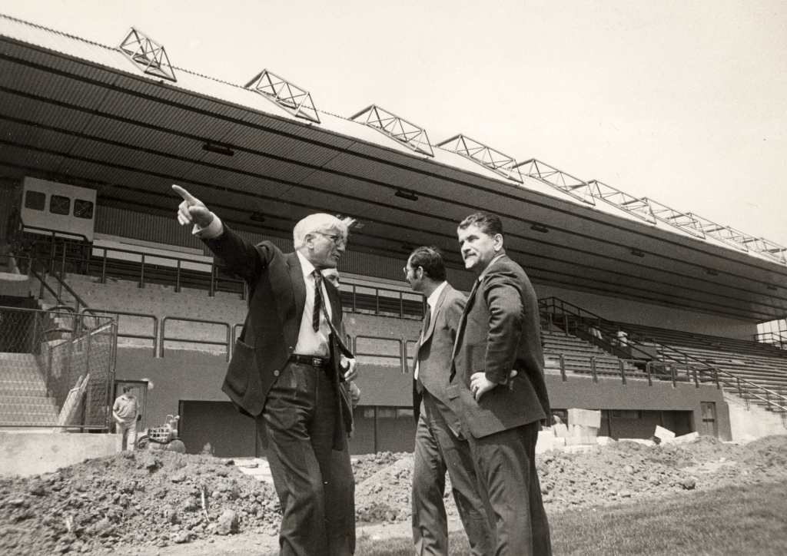
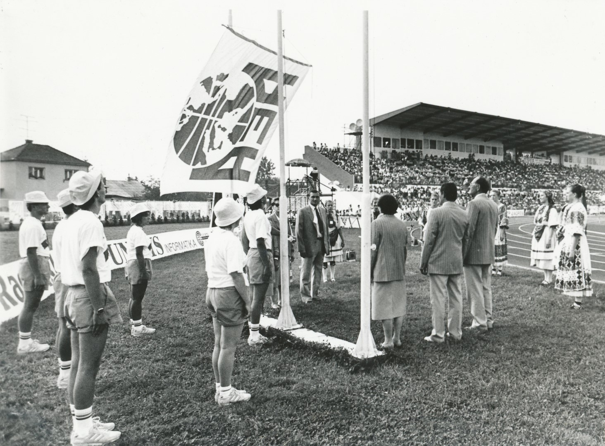

Artur Takač i JUPEA
KRONOLOGIJA
1987.
rekonstrukcija i izgradnja stadiona (SKUNC) Sloboda


Artur Takač u posjetu radovima na stadionu Slobode, Varaždin, 1987., GMV 106596
24. - 27. 8. 1989.
U Varaždinu je održana JUPEA, deseto po redu juniorsko prvenstvo Europe u atletici. Na programu natjecanja bilo je 27 disciplina u kojima je sudjelovalo 695 sportašica i sportaša iz 26 europskih zemalja. Zahvaljujući Takačevom utjecaju, koji je u to vrijeme bio predsjednik Savjeta Europske atletske asocijacije, Varaždin je dobio domaćinstvo JUPEE.
